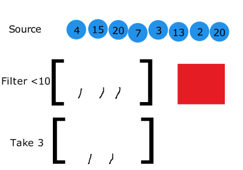
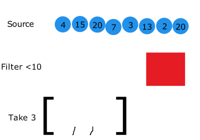
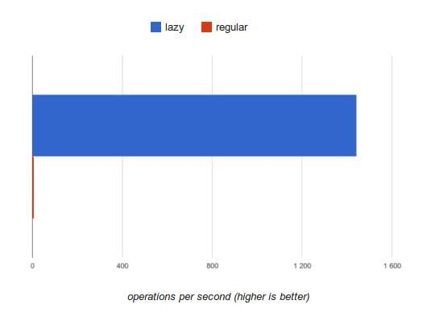

<!DOCTYPE HTML>
<html>
<head>
  <meta charset="utf-8">
  
  <title>延迟求值-如何让Lo-Dash再提速x100? | 刘哇勇的部落格</title>
  <meta name="author" content="Wayou Liu">
  
  <meta name="description" content="「注释」作者在本文里没有说明这么一个事实：目前的版本Lo-Dash v2.4.1并没有引入延迟求值的特性，Lo-Dash 3.0.0-pre中部分方法进行了引入，比如filter(),map(),reverse()。
原文：How to Speed Up Lo-Dash ×100? Introducing Lazy Evaluation

我时常觉得像Lo-Dash这样优秀的库已经无法再优化了。它整合了各种奇技淫巧已经将JavaScript的性能开发到了极限。它使用了最快速的语句，优化的算法，甚至还会在发版前做性能测试以保证回归没问题。">
  
  
  <meta name="viewport" content="width=device-width,initial-scale=1,maximum-scale=1">

  <meta property="og:title" content="延迟求值-如何让Lo-Dash再提速x100?">
  <meta property="og:site_name" content="刘哇勇的部落格">

  
  
		<!-- favicon -->
		<link rel="apple-touch-icon" sizes="57x57" href="/apple-touch-icon-57x57.png">
		<link rel="apple-touch-icon" sizes="60x60" href="/apple-touch-icon-60x60.png">
		<link rel="apple-touch-icon" sizes="72x72" href="/apple-touch-icon-72x72.png">
		<link rel="apple-touch-icon" sizes="76x76" href="/apple-touch-icon-76x76.png">
		<link rel="apple-touch-icon" sizes="114x114" href="/apple-touch-icon-114x114.png">
		<link rel="apple-touch-icon" sizes="120x120" href="/apple-touch-icon-120x120.png">
		<link rel="apple-touch-icon" sizes="144x144" href="/apple-touch-icon-144x144.png">
		<link rel="apple-touch-icon" sizes="152x152" href="/apple-touch-icon-152x152.png">
		<link rel="icon" type="image/png" href="/favicon-32x32.png" sizes="32x32">
		<link rel="icon" type="image/png" href="/favicon-96x96.png" sizes="96x96">
		<link rel="icon" type="image/png" href="/favicon-16x16.png" sizes="16x16">
		<link rel="manifest" href="/manifest.json">
		<meta name="msapplication-TileColor" content="#009688">
		<meta name="msapplication-TileImage" content="/mstile-144x144.png">
		<meta name="theme-color" content="#009688">
		<!-- favicon end -->
    <!-- <link href="/favicon.ico" rel="icon"> -->
  

  <!-- toc -->
  <link rel="stylesheet" href="/libs/tocify/jquery.tocify.css" media="screen" type="text/css">

  <!-- <link rel="stylesheet" href="/libs/bs/css/bootstrap.min.css" media="screen" type="text/css"> -->
  <link rel="stylesheet" href="//apps.bdimg.com/libs/bootstrap/3.3.4/css/bootstrap.min.css" media="screen" type="text/css">

  <!-- material design -->
	<!-- <link rel="stylesheet" href="/libs/bs-material/css/ripples.min.css" media="screen" type="text/css"> -->
  <link rel="stylesheet" href="//apps.bdimg.com/libs/bootstrap-material/0.3.0/css/ripples.min.css" media="screen" type="text/css">
  <!-- <link rel="stylesheet" href="/libs/bs-material/css/material.min.css" media="screen" type="text/css"> -->
	<link rel="stylesheet" href="//apps.bdimg.com/libs/bootstrap-material/0.3.0/css/material.min.css" media="screen" type="text/css">

  <link rel="stylesheet" href="/css/highlight.light.css" media="screen" type="text/css">

  <link rel="stylesheet" href="/css/style.css" media="screen" type="text/css">

  <!-- 百度统计 -->
  
  <script>
  var _hmt = _hmt || [];
  (function() {
    var hm = document.createElement("script");
    hm.src = "//hm.baidu.com/hm.js?392796d51567e848aebf813b65cb8656";
    var s = document.getElementsByTagName("script")[0];
    s.parentNode.insertBefore(hm, s);
  })();
  </script>
  

  <!-- 谷歌统计 -->
  

  <script src="//apps.bdimg.com/libs/jquery/2.0.3/jquery.min.js"></script>
	<script>window.jQuery || document.write('<script src="/libs/jquery-2.0.3.min.js" type="text/javascript"><\/script>')</script>

</head></html>
 	<body>
	  <nav class="navbar navbar-default">
    <div class="container">
        <div class="navbar-header">
            <button type="button" class="navbar-toggle collapsed" data-toggle="collapse" data-target="#navbar" aria-expanded="false" aria-controls="navbar">
            <span class="sr-only">菜单</span>
            <span class="icon-bar"></span>
            <span class="icon-bar"></span>
            <span class="icon-bar"></span>
            </button>
            <a class="navbar-brand" href="/">刘哇勇的部落格</a>
        </div>
        <div id="navbar" class="collapse navbar-collapse">
            <ul class="nav navbar-nav navbar-right">
                
                <li>
                    <a href="/" title="">
                    <i class="fa fa-home"></i>首页
                    </a>
                </li>
                
                <li>
                    <a href="/archives" title="">
                    <i class="fa fa-list"></i>存档
                    </a>
                </li>
                
                <li>
                    <a href="/about" title="">
                    <i class="fa fa-info-circle"></i>关于
                    </a>
                </li>
                
                <li>
                    <a href="/atom.xml" title="这是一个订阅源">
                    <i class="fa fa-rss"></i>RSS
                    </a>
                </li>
                
            </ul>
        </div>
    </div>
</nav>
	  <div class="container">
	    <div class="row">
	<div class="col-md-9">

		<div class="content">
			<!-- index -->
		   

			  		<h1>延迟求值-如何让Lo-Dash再提速x100?</h1>
					
					<div>
						<span class="post-time">2014-11-08 15:29:27</span>
					</div>	
					

					<blockquote>
<p>「注释」作者在本文里没有说明这么一个事实：<br>目前的版本<code>Lo-Dash v2.4.1</code>并没有引入延迟求值的特性，<code>Lo-Dash 3.0.0-pre</code>中部分方法进行了引入，比如<code>filter()</code>,<code>map()</code>,<code>reverse()</code>。</p>
<p>原文：<a href="http://filimanjaro.com/blog/2014/introducing-lazy-evaluation" target="_blank" rel="external">How to Speed Up Lo-Dash ×100? Introducing Lazy Evaluation</a></p>
</blockquote>
<p>我时常觉得像<code>Lo-Dash</code>这样优秀的库已经无法再优化了。它整合了各种<a href="https://www.youtube.com/watch?v=NthmeLEhDDM" target="_blank" rel="external">奇技淫巧</a>已经将JavaScript的性能开发到了极限。它使用了最快速的语句，优化的算法，甚至还会在发版前做性能测试以保证回归没问题。</p>
<a id="more"></a>
<h2 id="u5EF6_u8FDF_u6C42_u503C"><a href="#u5EF6_u8FDF_u6C42_u503C" class="headerlink" title="延迟求值"></a>延迟求值</h2><p>但似乎我错了-还可以让<code>Lo-Dash</code>有明显的提升。只需将关注点从细微的优化转移到算法上来。譬如，在一次循环中我们往往会去优化循环体：</p>
<figure class="highlight js"><table><tr><td class="gutter"><pre><span class="line">1</span><br><span class="line">2</span><br><span class="line">3</span><br><span class="line">4</span><br></pre></td><td class="code"><pre><span class="line"><span class="keyword">var</span> len = getLength();</span><br><span class="line"><span class="keyword">for</span>(<span class="keyword">var</span> i = <span class="number">0</span>; i &lt; len; i++) &#123;</span><br><span class="line">    operation(); <span class="comment">// &lt;- 10ms - 如何做到 9ms?!</span></span><br><span class="line">&#125;</span><br></pre></td></tr></table></figure>
<p>但针对循环体的优化往往很难，很多时候已经到极限了。相反，优化<code>getLength()</code> 函数尽量减少循环次数变得更有意义了。你想啊，这个数值越小，需要循环的<code>10ms</code>就越少。</p>
<p>这便是<code>Lo-Dash</code>实现延迟求值的大致思路。重要的是减少循环次数，而不是每次循环的时间。让我们考察下面的例子：</p>
<figure class="highlight js"><table><tr><td class="gutter"><pre><span class="line">1</span><br><span class="line">2</span><br><span class="line">3</span><br><span class="line">4</span><br><span class="line">5</span><br><span class="line">6</span><br><span class="line">7</span><br><span class="line">8</span><br><span class="line">9</span><br><span class="line">10</span><br><span class="line">11</span><br></pre></td><td class="code"><pre><span class="line"><span class="function"><span class="keyword">function</span> <span class="title">priceLt</span>(<span class="params">x</span>) </span>&#123;</span><br><span class="line">   <span class="keyword">return</span> <span class="function"><span class="keyword">function</span>(<span class="params">item</span>) </span>&#123; <span class="keyword">return</span> item.price &lt; x; &#125;;</span><br><span class="line">&#125;</span><br><span class="line"><span class="keyword">var</span> gems = [</span><br><span class="line">   &#123; name: <span class="string">'Sunstone'</span>, price: <span class="number">4</span> &#125;, &#123; name: <span class="string">'Amethyst'</span>, price: <span class="number">15</span> &#125;,</span><br><span class="line">   &#123; name: <span class="string">'Prehnite'</span>, price: <span class="number">20</span>&#125;, &#123; name: <span class="string">'Sugilite'</span>, price: <span class="number">7</span>  &#125;,</span><br><span class="line">   &#123; name: <span class="string">'Diopside'</span>, price: <span class="number">3</span> &#125;, &#123; name: <span class="string">'Feldspar'</span>, price: <span class="number">13</span> &#125;,</span><br><span class="line">   &#123; name: <span class="string">'Dioptase'</span>, price: <span class="number">2</span> &#125;, &#123; name: <span class="string">'Sapphire'</span>, price: <span class="number">20</span> &#125;</span><br><span class="line">];</span><br><span class="line"></span><br><span class="line"><span class="keyword">var</span> chosen = _(gems).filter(priceLt(<span class="number">10</span>)).take(<span class="number">3</span>).value();</span><br></pre></td></tr></table></figure>
<p>我们只想取出3个价格低于10元的小球。通常情况下我们先过滤整个数据源，最后从所有小于10的元素里返回前面三个即可。</p>
<p></p>
<p>但这种做法并不优雅。它处理了全部8个数据，但其实只需要处理前面5个我们就能拿到结果了。同样为了得到正确的结果，延迟求值则只处理最少的元素。优化后如下图所示：</p>
<p></p>
<p>一下子就获得了37.5%的性能提升。很容易找出提升X1000+的例子。比如：</p>
<figure class="highlight js"><table><tr><td class="gutter"><pre><span class="line">1</span><br><span class="line">2</span><br><span class="line">3</span><br><span class="line">4</span><br><span class="line">5</span><br><span class="line">6</span><br><span class="line">7</span><br><span class="line">8</span><br></pre></td><td class="code"><pre><span class="line"><span class="keyword">var</span> phoneNumbers = [<span class="number">5554445555</span>, <span class="number">1424445656</span>, <span class="number">5554443333</span>, … ×<span class="number">99</span>,<span class="number">999</span>];</span><br><span class="line"></span><br><span class="line"><span class="comment">// 取出100个含 `55` 的号码</span></span><br><span class="line"><span class="function"><span class="keyword">function</span> <span class="title">contains55</span>(<span class="params">str</span>) </span>&#123;</span><br><span class="line">    <span class="keyword">return</span> str.contains(<span class="string">"55"</span>);</span><br><span class="line">&#125;;</span><br><span class="line"></span><br><span class="line"><span class="keyword">var</span> r = _(phoneNumbers).map(<span class="built_in">String</span>).filter(contains55).take(<span class="number">100</span>);</span><br></pre></td></tr></table></figure>
<p>这个例子中<code>map</code>和<code>filter</code> 将遍历99999 个元素，但很有可能我们只需处理到1000个元素的时候就已经拿到想要的结果了。这回性能的提升就太明显了（<a href="http://jsperf.com/lazy-demo" target="_blank" rel="external">benchmark</a>）：</p>
<p></p>
<h2 id="u6D41_u6C34_u7EBF"><a href="#u6D41_u6C34_u7EBF" class="headerlink" title="流水线"></a>流水线</h2><p>延迟求值同时带来了另一个好处，我称之为“流水线”。要旨就是避免产生中间数组，而是对一个元素一次性进行完所有操作。下面用代码说话：</p>
<figure class="highlight js"><table><tr><td class="gutter"><pre><span class="line">1</span><br></pre></td><td class="code"><pre><span class="line"><span class="keyword">var</span> result = _(source).map(func1).map(func2).map(func3).value();</span><br></pre></td></tr></table></figure>
<p>上面看似优雅的写法在原始的<code>Lo-Dash</code>里会转换成下面的样子（直接求值）：</p>
<figure class="highlight js"><table><tr><td class="gutter"><pre><span class="line">1</span><br><span class="line">2</span><br><span class="line">3</span><br><span class="line">4</span><br><span class="line">5</span><br><span class="line">6</span><br><span class="line">7</span><br><span class="line">8</span><br><span class="line">9</span><br><span class="line">10</span><br><span class="line">11</span><br><span class="line">12</span><br><span class="line">13</span><br><span class="line">14</span><br></pre></td><td class="code"><pre><span class="line"><span class="keyword">var</span> result = [], temp1 = [], temp2 = [], temp3 = [];</span><br><span class="line"></span><br><span class="line"><span class="keyword">for</span>(<span class="keyword">var</span> i = <span class="number">0</span>; i &lt; source.length; i++) &#123;</span><br><span class="line">   temp1[i] = func1(source[i]);</span><br><span class="line">&#125;</span><br><span class="line"></span><br><span class="line"><span class="keyword">for</span>(i = <span class="number">0</span>; i &lt; source.length; i++) &#123;</span><br><span class="line">   temp2[i] = func2(temp1[i]);</span><br><span class="line">&#125;</span><br><span class="line"></span><br><span class="line"><span class="keyword">for</span>(i = <span class="number">0</span>; i &lt; source.length; i++) &#123;</span><br><span class="line">   temp3[i] = func3(temp2[i]);</span><br><span class="line">&#125;</span><br><span class="line">result = temp3;</span><br></pre></td></tr></table></figure>
<p>当引入了延迟求值后，代码大致就成这样的了：</p>
<figure class="highlight js"><table><tr><td class="gutter"><pre><span class="line">1</span><br><span class="line">2</span><br><span class="line">3</span><br><span class="line">4</span><br></pre></td><td class="code"><pre><span class="line"><span class="keyword">var</span> result = [];</span><br><span class="line"><span class="keyword">for</span>(<span class="keyword">var</span> i = <span class="number">0</span>; i &lt; source.length; i++) &#123;</span><br><span class="line">   result[i] = func3(func2(func1(source[i])));</span><br><span class="line">&#125;</span><br></pre></td></tr></table></figure>
<p>减少不必要的中间变量多少会带来性能上的提升，特别是在数据源特别巨大，内存又吃紧的情况下。</p>
<h2 id="u5EF6_u8FDF_u6267_u884C"><a href="#u5EF6_u8FDF_u6267_u884C" class="headerlink" title="延迟执行"></a>延迟执行</h2><p>延迟求值带来的另一个好处是延迟执行。无论何时你写了段链式代码，只有在显式地调用了<code>.value()</code>后才会真正执行。这样一来，在数据源需要异步去拉取的情况下，可以保证我们处理的是最新的数据。</p>
<figure class="highlight js"><table><tr><td class="gutter"><pre><span class="line">1</span><br><span class="line">2</span><br><span class="line">3</span><br><span class="line">4</span><br><span class="line">5</span><br><span class="line">6</span><br><span class="line">7</span><br><span class="line">8</span><br></pre></td><td class="code"><pre><span class="line"><span class="keyword">var</span> wallet = _(assets).filter(ownedBy(<span class="string">'me'</span>))</span><br><span class="line">                      .pluck(<span class="string">'value'</span>)</span><br><span class="line">                      .reduce(sum);</span><br><span class="line"></span><br><span class="line">$json.get(<span class="string">"/new/assets"</span>).success(<span class="function"><span class="keyword">function</span>(<span class="params">data</span>) </span>&#123;</span><br><span class="line">    assets.push.apply(assets, data); <span class="comment">// 更新数据源</span></span><br><span class="line">    wallet.value(); <span class="comment">// 返回的结果是最新的</span></span><br><span class="line">&#125;);</span><br></pre></td></tr></table></figure>
<p>而且这种机制在某些情况下也会提高执行效果。我们可以老早发送一个请求获取数据，然后指定一个精确的时间来执行。</p>
<h2 id="u540E_u8BB0"><a href="#u540E_u8BB0" class="headerlink" title="后记"></a>后记</h2><p>延迟求值并且不算什么新技术。在一些库中已经在使用了，比如<a href="http://en.wikipedia.org/wiki/Language_Integrated_Query" target="_blank" rel="external">LINQ</a>,<a href="http://danieltao.com/lazy.js/" target="_blank" rel="external">Lazy.js</a>还有其他等等。那么问题来了，<code>Lo-Dash</code>存在的意义是啥？我想就是你仍然可以使用你熟悉的<code>Underscore</code> 接口但享受一个更高效的底层实现，不需要额外的学习成本，代码上面也不会有大的变动，只需稍加修改。</p>
			  <!-- about -->
			  
		</div>

		<!-- pagination -->
	  

		<div class="comment-section">
  
  
   <!-- 多说评论框 start -->
    <div class="ds-thread" data-thread-key="_posts/2014-11-08-lazy-evaluation.md" data-title="延迟求值-如何让Lo-Dash再提速x100?" data-url="http://wayou.github.io/2014/11/08/lazy-evaluation/"></div>
    <!-- 多说评论框 end -->
   <!-- 多说公共JS代码 start (一个网页只需插入一次) -->
    <script type="text/javascript">
    var duoshuoQuery = {short_name:'wayouliu'};
      (function() {
        var ds = document.createElement('script');
        ds.type = 'text/javascript';ds.async = true;
        ds.src = (document.location.protocol == 'https:' ? 'https:' : 'http:') + '//static.duoshuo.com/embed.js';
        ds.charset = 'UTF-8';
        (document.getElementsByTagName('head')[0] 
         || document.getElementsByTagName('body')[0]).appendChild(ds);
      })();
      </script>
    <!-- 多说公共JS代码 end -->
  


</div>
	</div>
	<div class="col-md-3">
		
			<div id="toc"></div>
		
	</div>

</div>
		<footer>
			<p>
  由 <a href="https://hexo.io">hexo</a> 强力驱动 | 搭载 <a href="https://github.com/wayou/hexo-theme-material">material</a> 主题
</p>
<p>
  &copy; 2015 <a href="http://wayou.github.io"> Wayou Liu </a>
</p>
<a id="gotop" href="#" title="back to top"><i class="mdi-hardware-keyboard-arrow-up"></i></a>
		</footer>
	  </div>

		<!-- <script src="/libs/bs/js/bootstrap.min.js"></script> -->
		<script src="//apps.bdimg.com/libs/bootstrap/3.3.4/js/bootstrap.min.js"></script>
		<script>(typeof $().modal == 'function')|| document.write('<script src="/libs/bs/js/bootstrap.min.js" type="text/javascript"><\/script>')</script>

		<!-- material design -->
		<!-- <script src="/libs/bs-material/js/ripples.min.js"></script> -->
		<script src="//apps.bdimg.com/libs/bootstrap-material/0.3.0/js/ripples.min.js"></script>
		<!-- <script src="/libs/bs-material/js/material.min.js"></script> -->
		<script src="//apps.bdimg.com/libs/bootstrap-material/0.3.0/js/material.min.js"></script>
		<!-- toc -->
		<!-- <script src="/libs/tocify/jquery-ui.min.js"></script> -->
		<script src="//apps.bdimg.com/libs/jqueryui/1.10.4/jquery-ui.min.js"></script>
		<script src="/libs/tocify/jquery.tocify.custom.js"></script>

		<script src="/js/main.js"></script>

	</body>
